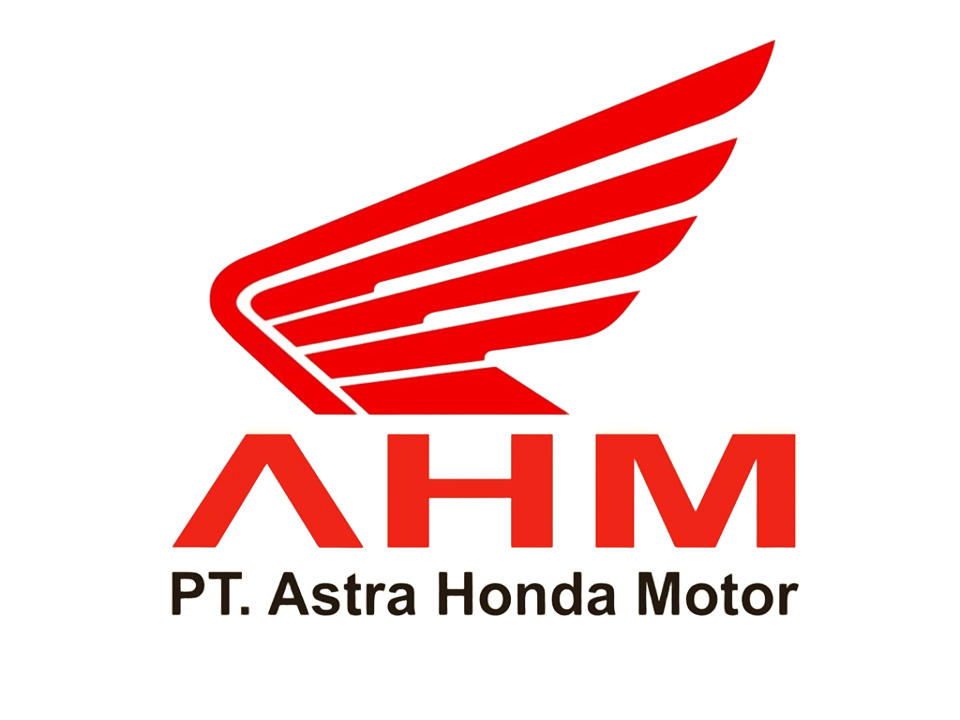
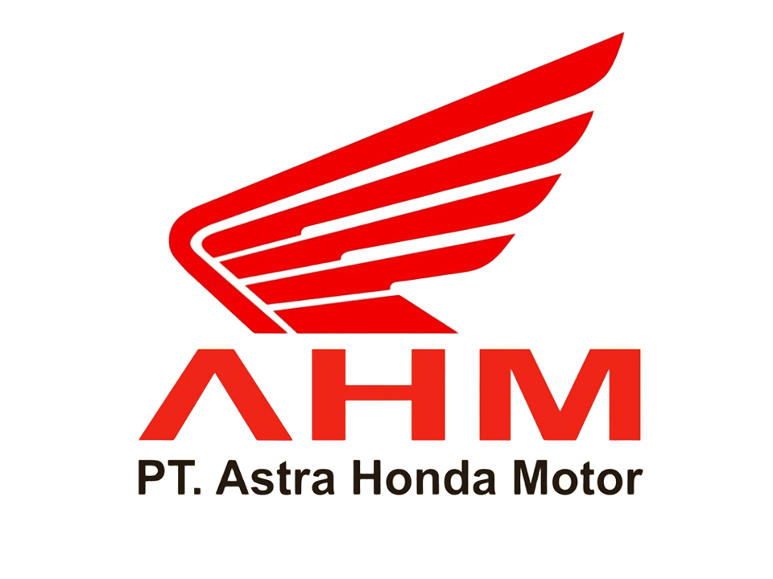

Teknik Otomotif (TO)

Tentang TO
TO adalah salah satu jurusan di program keahlian Teknik Otomotif yang berkecimpung dalam kendaraan roda dua/R2 (sepeda motor), dimana siswa di bekali dengan keterampilan, pengetahuan dan sikap sebagai mekanik level dasar yang kompeten, dan disiapkan untuk bekerja di bengkel resmi sepeda motor ataupun di bengkel-bengkel sepeda motor secara umum. hingga mempersiapkan siswa untuk menjadi wirausahawan di bidang perbengkelan sepeda motor.
Materi yang Dipelajari
- Teknologi Kendaraan Ringan
- Perbaikan dan Perawatan Mesin
- Sistem Kelistrikan Otomotif
- Sistem Rem, Suspensi, dan Kemudi
- Diagnostik dan Trouble Shooting Kendaraan
- Teknologi Motor Listrik dan Hybrid
- Teknik Body Repair dan Pengecatan
- Keselamatan dan Kesehatan Kerja (K3) di Otomotif
Prospek Karir Teknik Otomotif
- Teknisi Kendaraan
- Service Advisor
- Manajer Bengkel
- Desainer Otomotif
- Entrepreneur di Bidang Otomotif
Institusi Pasangan
 
